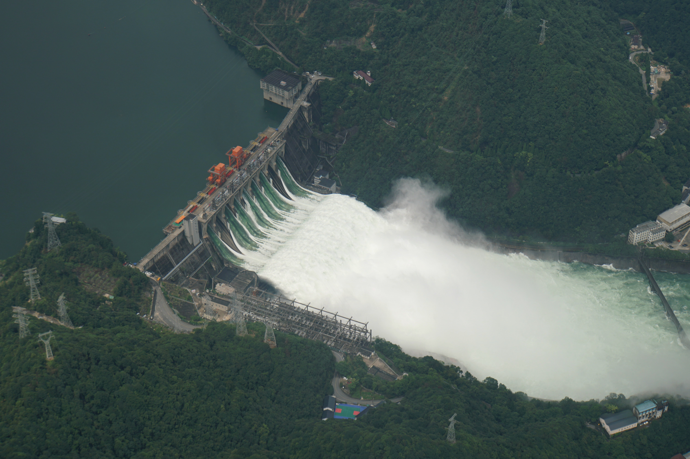

Methods of flood management
Some methods of flood control have been practiced since ancient times.
These methods include planting vegetation to retain extra water,
terracing hillsides to slow flow downhill, and the construction of
floodways (man-made channels to divert floodwater). Other techniques
include the construction of levees, lakes, dams, reservoirs, retention
ponds to hold extra water during times of flooding.
Coastal management
Coastal management is defence against flooding and erosion, and
techniques that stop erosion to claim lands. Protection against
rising sea levels in the 21st century is crucial, as sea level rise
accelerates due to climate change. Changes in sea level damage
beaches and coastal systems are expected to rise at an increasing
rate, causing coastal sediments to be disturbed by tidal energy.
Coastal zones occupy less than 15% of the Earth's land area, while
they host more than 40% of the world population. Nearly 1.2 billion
people live within 100 km of shoreline and 100 m of sea level, with
an average density 3 times higher than the global average for
population. With three-quarters of the world population expected to
reside in the coastal zone by 2025, human activities originating
from this small land area will impose heavy pressure on coasts.
Coastal zones contain rich resources to produce goods and services
and are home to most commercial and industrial activities.
(Oosterscheldekering sea wall, the Netherlands)
Dams
Many dams and their associated reservoirs are designed completely or partially to aid in flood protection and control. Many large dams have flood-control reservations in which the level of a reservoir must be kept below a certain elevation before the onset of the rainy/summer melt season to allow a certain amount of space in which floodwaters can fill. Other beneficial uses of dam created reservoirs include hydroelectric power generation, water conservation, and recreation. Reservoir and dam construction and design is based upon standards, typically set out by the government. In the United States, dam and reservoir design is regulated by the US Army Corps of Engineers (USACE). Design of a dam and reservoir follows guidelines set by the USACE and covers topics such as design flow rates in consideration to meteorological, topographic, streamflow, and soil data for the watershed above the structure.

(Flood Discharging at Xin'an River Dam
during 2020 China floods)
Diversion canals
Flood control channels are large and empty basins which let water flow in and out (except during flooding) or dry channels that run below the street levels of some larger cities, so that if and when a flood occurs, the water will run into these channels, and eventually drain into a river or other body of water. Flood channels are sometimes built on the former courses of waterways as a way to reduce flooding.
Floodplains and groundwater replenishment
Excess water can be used for groundwater replenishment by diversion onto land that can absorb the water. This technique can reduce the impact of later droughts by using the ground as a natural reservoir. It is being used in California, where orchards and vineyards can be flooded without damaging crops, or in other places wilderness areas have been re-engineered to act as floodplains.
(Tujunga Wash is an example
of a concrete flood control channel.)
Development of technology
Europe is at the forefront of the flood control technology, with low-lying countries such as the Netherlands and Belgium developing techniques that can serve as examples to other countries facing similar problems and other countries which may soon face these problems.
After Hurricane Katrina, the US state of Louisiana sent politicians to the Netherlands to take a tour of the complex and highly developed flood control system in place in the Netherlands. With a BBC article quoting experts as saying 70 percent more people will live in delta cities by 2050, the number of people impacted by a rise in sea level will greatly increase. The Netherlands has one of the best flood control systems in the world and new ways to deal with water are constantly being developed and tested, such as the underground storage of water, storing water in reservoirs in large parking garages or on playgrounds, Rotterdam started a project to construct a floating housing development of 120 acres (0.49 km2) to deal with rising sea levels. Several approaches, from high-tech sensors detecting imminent levee failure to movable semi-circular structures closing an entire river, are being developed or used around the world. Regular maintenance of hydraulic structures, however, is another crucial part of flood control.
RELATED: GOOGLE TAKES ITS FLOOD PREDICTION TOOLS FOR INDIA TO THE NEXT LEVEL
1. The rapid response water-gate
When flooding is imminent, you often need a barrier to protect yourself. Sandbags serve this task in many scenarios, but they may require a significant amount of preparation and set-up time, plus it's cumbersome to carry around. A device known as the water-gate can be a useful alternative. This is a rapidly deployable device made of a PVC material. It utilizes the pressure of oncoming water to stabilize itself. This essentially means that the floodwaters are used to build their own dam.
(A computer-generated mockup of the Water-gate system
depicting how it 'inflates' to fill with water and create a dam.)
2. Aquobex flood guard
We've spent some time discussing larger-scale barriers. For a smaller-scale appliance, we have the Aquobex entry barrier system. It's a small-scale dam that is designed to seal off doorways and entrances to buildings. By creating a seal with the surrounding surfaces, the rising water is kept from coming into the structure when these barriers are applied to all of the building's entryways.
The barrier is completely reusable and can be quickly deployed in times of emergency.
 (A look at the Aquobex system installed on a double sliding door)
(A look at the Aquobex system installed on a double sliding door)
3. The Thames Barrier
We've spent some time discussing larger-scale barriers. For a smaller-scale appliance, we have the Aquobex entry barrier system. It's a small-scale dam that is designed to seal off doorways and entrances to buildings. By creating a seal with the surrounding surfaces, the rising water is kept from coming into the structure when these barriers are applied to all of the building's entryways.
The barrier is completely reusable and can be quickly deployed in times of emergency.
(A wide shot of the Thames Barrier, depicting the steel
structures that rotate into place to prevent flooding.)